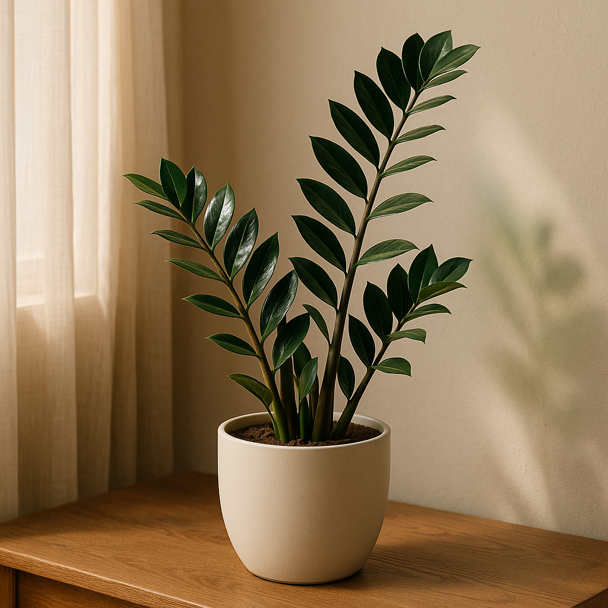

Zamioculca — a planta que perdoa seus esquecimentos e ainda enfeita sua casa

Por Plantas & Gatos — Guia confiável para plantas, gatos e boa convivência em casa
Sabe aquela planta que parece feita sob medida para quem vive correndo? A Zamioculca é exatamente isso. Com suas folhas verde-escuro brilhantes e porte elegante, ela tem aquela presença que transforma qualquer cantinho da casa — da sala de estar ao home office. E o melhor: ela não vai te cobrar atenção o tempo todo.
Enquanto outras plantas imploram por cuidados diários, a Zamioculca é praticamente autossuficiente. Ela convive bem com ar-condicionado, não reclama de ambientes com pouca luz natural e, pasme, até perdoa quando você esquece de regá-la por semanas. Parece bom demais para ser verdade? Tem explicação.
O truque está escondido na terra. Embaixo do substrato, a Zamioculca desenvolveu rizomas — aquelas estruturas arredondadas que parecem mini batatas. Eles funcionam como cantis naturais, armazenando água e nutrientes para os dias de seca. É por isso que ela aguenta firme mesmo quando a rotina aperta e a rega fica para depois.
Agora, atenção: se tem uma coisa que a Zamioculca não perdoa é o afogamento. Regar demais é o erro mais comum — e o mais fatal. O solo encharcado apodrece as raízes rapidinho. A regra de ouro é simples: só regue quando o substrato estiver completamente seco ao toque. E nada de deixá-la no sol direto, tá? Ela prefere aquela luz indireta, difusa, que ilumina sem queimar.
Mas tem um porém importante: se você tem gatos ou cachorros em casa, cuidado. As folhas da Zamioculca contêm oxalato de cálcio, uma substância irritante que pode causar salivação excessiva, desconforto na boca e até problemas digestivos se o pet resolver dar uma mordidinha. Nada grave na maioria dos casos, mas definitivamente desagradável. O ideal é colocá-la num lugar alto ou fora do alcance dos bichos mais curiosos.
💡 E tem mais: além de purificar o ar (sim, ela faz isso também!), a Zamioculca carrega um simbolismo poderoso. Em várias culturas, ela é conhecida como "planta da fortuna" ou "planta dólar", representando prosperidade, resiliência e boas energias. Então, além de linda e descomplicada, ela ainda atrai boas vibrações para o seu lar.
No fim das contas, a Zamioculca é aquela amiga confiável: bonita, independente e que está sempre lá, mesmo quando você não consegue dar toda a atenção que gostaria.
← Voltar para o blog